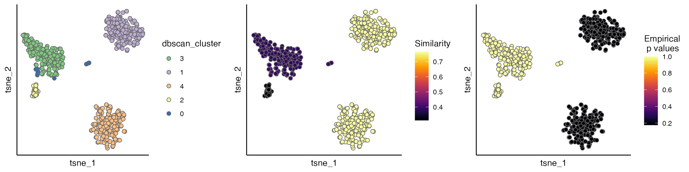
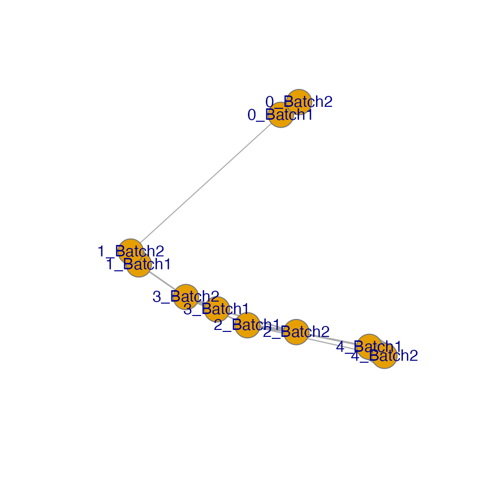
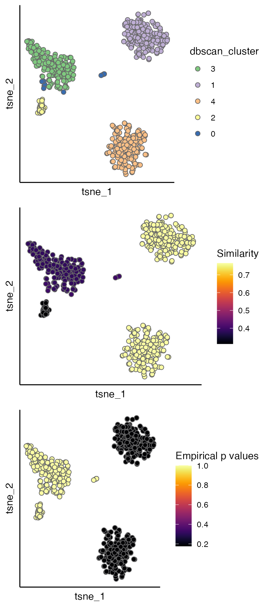

Integration and batch correction methods have become a popular component in the bioinformatic workflows for scRNA-Seq data analysis, whilst the integration results (mostly corrected PCs or less commonly corrected read counts) are rarely validated or evaluated with an objective metric.
To assess the correctness of integration (i.e. whether cells belonging to the same population are gathered and ones belonging to different populations stay separate after integration), the existing evaluation metrics require the existence of ground truth for cell population annotations.
CIDER provides a ground-truth-free approach to evaluate the integration results. This vignette focuses how showing the process using the example data of dendritic cells.
The example data are loaded using data("dendritic"). It contains 26593 genes and 564 cells from two batches.
table(dendritic$Batch)
#>
#> Batch1 Batch2
#> 281 283First an integration method\(^1\) is applied on the dendritic data. You can apply other integration methods to the your data, as long as the correct PCs are stored in your Seurat object, i.e. Reductions(seu.integrated, "pca") or seu.integrated@reductions$pca.
seu.list <- SplitObject(dendritic, split.by = "Batch")
for (i in 1:length(seu.list)) {
seu.list[[i]] <- NormalizeData(seu.list[[i]], verbose = FALSE)
seu.list[[i]] <- FindVariableFeatures(seu.list[[i]], selection.method = "vst",
nfeatures = 1000, verbose = FALSE)
}
seu.anchors <- FindIntegrationAnchors(object.list = seu.list, dims = 1:15, verbose = FALSE)
seu.integrated <- IntegrateData(anchorset = seu.anchors, dims = 1:15, verbose = FALSE)
DefaultAssay(seu.integrated) <- "integrated"
seu.integrated <- ScaleData(seu.integrated, verbose = FALSE)
seu.integrated <- RunPCA(seu.integrated, verbose = FALSE)
seu.integrated <- RunTSNE(seu.integrated, reduction = "pca", dims = 1:5)
seu.integrated@reductions$pca
#> A dimensional reduction object with key PC_
#> Number of dimensions: 50
#> Projected dimensional reduction calculated: FALSE
#> Jackstraw run: FALSE
#> Computed using assay: integratedClear the intermediate outcome.
CIDER evaluates integration results in three steps:
hdbscan.seurat). This step uses HDBSCAN, which is a density-based clustering algorithm\(^2\). The clustering results are stored in seu.integrated$dbscan_cluster. Clusters are further divided into batch-specific clusters by concatenating dbscan_cluster and batch, stored in seu.integrated$initial_cluster.getIDEr) among the batch-specific initial clusters. If multiple CPUs are availble, you can set use.parallel = TRUE and n.cores to the number of available cores to speed it up.estimateProb) for the correctness of integration. High similarity values and low p values indicate that the cell are similar to the surrounding cells and likely integrated correctly.
seu.integrated <- hdbscan.seurat(seu.integrated)
ider <- getIDEr(seu.integrated, use.parallel = FALSE, verbose = FALSE)
seu.integrated <- estimateProb(seu.integrated, ider)The evaluation scores can be viewed by the scatterPlot as below. As shown cells with dbscan_cluster of 2 and 3 have low regional similarity and high empirical p values, suggesting that they can be incorrectly integrated.
p1 <- scatterPlot(seu.integrated, "tsne", "dbscan_cluster")
p2 <- scatterPlot(seu.integrated, "tsne", colour.by = "similarity") + labs(fill = "Similarity")
p3 <- scatterPlot(seu.integrated, "tsne", colour.by = "pvalue") + labs(fill = "Empirical\n p values")
plot_grid(p1,p2,p3, ncol = 3)
To have more insight, we can view the IDER-based similarity matrix by functions plotNetwork or plotHeatmap. Both of them require the input of a Seurat object and the output of getIDEr. In this example, 1_Batch1 and 1_Batch2 as well as 4_Batch1 and 4_Batch2 have high similarity.
plotNetwork generates a graph where vertexes are initial clusters and edge widths are similarity values. The parameter weight.factor controls the scale of edge widths; larger weight.factor will give bolder edges proportionally.
plotNetwork(seu.integrated, ider, weight.factor = 3)
#> IGRAPH effb430 UNW- 10 10 --
#> + attr: name (v/c), frame.color (v/c), size (v/n), label.family (v/c),
#> | weight (e/n), width (e/n)
#> + edges from effb430 (vertex names):
#> [1] 4_Batch1--4_Batch2 4_Batch1--2_Batch2 2_Batch1--4_Batch2 2_Batch1--2_Batch2
#> [5] 2_Batch1--3_Batch2 0_Batch1--0_Batch2 1_Batch1--1_Batch2 1_Batch1--3_Batch2
#> [9] 3_Batch1--2_Batch2 3_Batch1--3_Batch2plotHeatmap generates a heatmap where each cell is coloured and labeled by the similarity values.
plotHeatmap(seu.integrated, ider)So far the evaluation have completed and CIDER has not used the ground truth at all!
Let’s peep at the ground truth before the closure of this vignette. As shown in the figure below, the clusters having low IDER-based similarity and high p values actually have at least two popuplations (CD1C and CD141), verifying that CIDER spots the wrongly integrated cells.
scatterPlot(seu.integrated, "tsne", colour.by = "Group") + labs(fill = "Group\n (ground truth)")